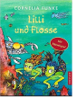

Lilli ist eine ganz besonders mutige kleine Nixe. Deshalb mochte sie auch unbedingt vor den Toren der Nixenstadt spielen - auch wenn ihr Freund Flosse sie warnt, weil seine Schuppen jucken, wie immer, wenn Gefahr droht. An Zweibeiner oder Riesenkraken glaubt Lilli sowieso nicht! Aber diesmal treffen die beiden das U-Boot "Seeteufel" von Herrn und Frau Schnorchel, die auf Nixenfang fur ihr Aquarium sind. Da ist es nur gut, dass es auch den Riesenkraken wirklich gibt: Der namlich bewahrt Lilli und Flosse davor, im Aquarium zu landen! Cornelia Funke hat in ihren Bildern kleine Schatzkisten und Tiere versteckt. Und fur alle, die nach dem Lesen und Suchen noch nicht aufhoren mogen, gibt es am Ende das Lilli-und-Flosse-Spiel.